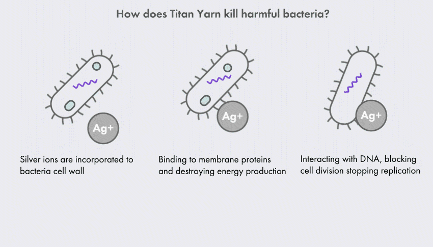

Titan Yarn’s innovative weave feature a unique three-dimensional, square-like waffle texture coming with a naturally larger surface area. Your towel can dry off quickly and easily. The fabric provides effective airflow to allow for a much faster drying time compared to other towels. Whenever you need a dry towel, Titan Yarn is there. Check yourself how much it can.
The highly-functional textured surface is also the key element for the ultra-absorbency of Titan Yarn! Dare we say it…okay we’ll say it…It works better than a fancy hotel bath towel.
With the modern waffle weaving technique, our thoughtfully selected fibers are blended and combined into a towel that’s also wildly soft, plush, and completely luxurious. The honeycombed structure is natural elastic and adds to extra fluffiness to the touch.
We love to create something special, something extraordinary. We uncovered the best and most sustainable cotton for our eco-friendly towels - an extra-soft, all natural long staple cotton called FINX Cotton grown in Egypt.
For the production of Titan Yarn, we utilize only natural elements on our planet - pure silver coated yarns and titanium fibers, instead of chemically attached silver ions. Titan Yarn saves you from worrying about the side effects caused by unnatural materials.